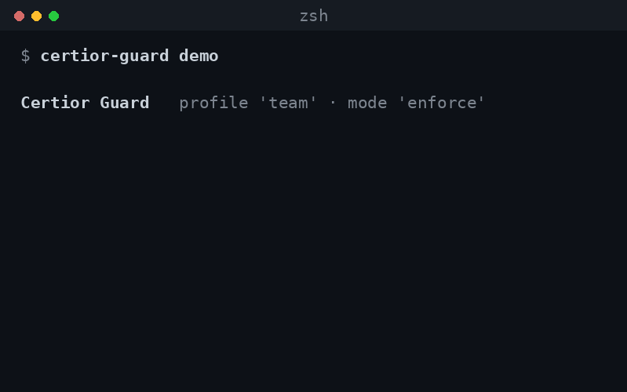

Certior checks every Claude Code action before it runs — and blocks the dangerous ones. No config, no account.

Coding agents have a shell, your files, and your cloud credentials. Prompt-injected or careless, an agent will read your .env, run curl | bash, drop a table, or deploy to prod. Nothing bounds what it’s allowed to do. Certior is that boundary.
One hook checks every Bash / Edit / Read / WebFetch / MCP call before it runs. Pick a profile — personal, team, production, regulated — and a mode.
Secrets, curl | bash, rm -rf, disk wipes, exfiltration — refused before they run. It parses commands, not strings, so evasions don’t slip past.
Deploys, migrations, git push, dependency installs, edits to auth/billing/CI — paused for your approval.
A tamper-evident audit trail you can verify — proof of what your agent was allowed to do. Local, no cloud.
certior-guard log, or prove it wasn’t tampered with using certior-guard verify.Set the rules once, enforce them across every engineer and every agent, and prove to auditors what happened.
Agent-agnostic by design. Starts with Claude Code; the same policy engine extends to Cursor, Copilot, MCP, and CI agents — one neutral control plane across all of them.
Talk to us →